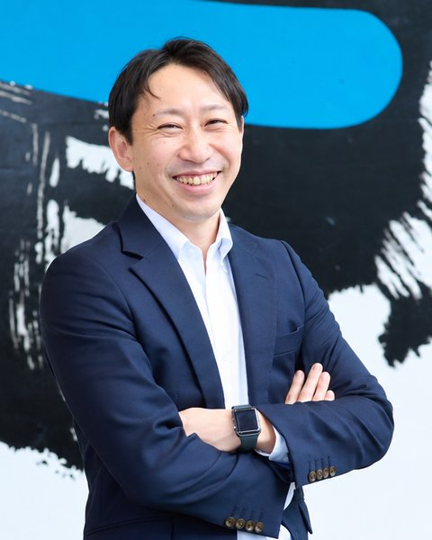

体験から、
事業をつくる。
Quriosityは、UXデザインを軸に、新規事業の立ち上げ、サービスデザイン、AIプロダクトの開発までを手がけるデザインコンサルティングファームです。ユーザーの事実から問いを立て直し、何をつくり、何をやめるかを決めて、事業として形にするところまで伴走します。
デザインの深さと、事業をつくる視点を、
分けずに持つ。
体験だけを磨いても事業は伸びず、事業計画だけではユーザーの実感から離れていきます。Quriosityはその間に立ち、ユーザーの事実と事業の論理を同じテーブルに載せて、つくるものを決めます。
ユーザーの事実から始める
何が分かれば意思決定が動くのかを先に定め、ユーザーの過去の行動から本当のニーズを捉えます。調べることが目的ではなく、決めるための材料をつくります。
- イシューの定義
- インタビュー・ユーザビリティテスト
- JTBD・ペルソナ
体験と事業をつなぐ
顧客体験、提供価値、業務やチャネルの仕組みを一枚の設計図にまとめ、事業として成立するサービスの形に落とします。
- サービスデザイン・ジャーニー設計
- 提供価値の再定義・コンセプト
- UX要件定義・プロトタイピング
事業として育てる
大手インターネット企業でアプリ事業とUX組織を率いてきた経験をもとに、ビジネスモデル、KPI、ロードマップまで事業側の言葉で設計します。
- 新規事業の構想・検証
- ビジネスモデル・KPI設計
- プロダクトマネジメント推進
課題の段階に合わせて、
必要なところから入ります。
Webサイトやアプリに限らず、ハードウェアや事業全体の体験を対象にしています。
事業開発Business Development
新規事業の機会探索から、コンセプト検証、ビジネスモデル設計、立ち上げ、リリース後のグロースまで。ユーザーの事実を根拠に、事業として何に賭け、どこでやめるかを一緒に決めます。
サービスデザインService Design
ユーザーの体験と、それを支える業務・システム・チャネルを一体で設計します。複数サービスの統合や、デジタルとリアルをまたぐ体験の再設計を得意としています。
UX戦略・デザインUX Strategy & Design
提供価値の再定義から体験コンセプト、UX要件、プロトタイピングまで。意思決定に必要なユーザー調査を自ら設計・実施し、つくるものの根拠にします。
AI事業・AIプロダクトAI Product & Enablement
AIで変えるべき業務と体験の見極めから、AI事業の構想、対話型AI・AIエージェントの体験設計、品質の評価と改善、現場への導入・定着までを支援します。
UX組織づくり・研修UX Enablement
UXデザインを社内に根づかせたい企業に向けて、自社の課題を題材にしたワークショップ型研修や、実案件に並走するOJT型の支援を提供します。
AIで、事業と体験をつくり直す。
AIを入れること自体を目的にはしません。どの業務、どの顧客体験をAIで変えれば事業が動くのかを見極めるところから始めて、構想、プロダクトの設計、品質づくり、現場への定着までを一貫して支援します。
構想する
業務と顧客体験を見渡し、AIが効く場所と効かない場所を切り分けます。AIが仕事の一部を担うとき、誰が何に対価を払うのかまで含めて事業の形を描きます。
- AI活用の機会探索
- AI新規事業の構想
- 人＋AIのビジネスモデル
体験を設計する
対話型AIやAIエージェントで、ユーザーの言葉になっていない希望を引き出す会話の流れや、AIに任せる範囲と人に戻す場面を設計します。
- 対話・ヒアリング設計
- AIと人の役割分担
- AIプロダクトのUX要件
品質をつくる
正解表のないAIの品質を、事業の成果につながる評価軸で定義。AIによるユーザビリティテストや、改善を回し続ける運用の仕組みまでつくります。
- 評価指標の設計
- AIによるユーザビリティテスト
- 継続改善の運用設計
現場に根づかせる
現場の業務と既存システムを観察し、AIエージェントを業務に組み込む設計から、社内の推進体制づくりや研修までを支援します。
- AIエージェントの業務導入
- 社内のAI活用推進
- AI時代のUX研修
調査・分析、資料づくり、プロトタイピングまで、日々の仕事をAIと組み合わせて進めています。少人数でも、検証の回数と速さを落とさない。その実践で得た手触りを、そのままご支援に持ち込みます。
問いを決めてから、つくる。
最初に「何を決めるための取り組みか」と「何が出たらどう判断するか」を固めます。だから、途中で議論がぶれず、つくったものが事業の判断に使われます。
イシューを定義する
誰の、どんな意思決定を動かすための取り組みなのかを言葉にします。
判断基準を決める
仮説と「何が出たらGOとするか」を、検証の前に決めておきます。
ユーザーの事実を集める
意向ではなく過去の行動を見て、定性と定量を往復して確かめます。
価値と事業を設計する
事実を根拠に提供価値を定義し直し、サービスと事業の形に落とします。
検証し、実装する
プロトタイプで素早く確かめ、要件・KPI・ロードマップとして実装につなげます。
主な支援実績
守秘義務のため、業界と支援内容のみを掲載しています。
自動車メーカーの新規事業立ち上げ
自動車メーカーの新規事業を、事業コンセプトの設計からサービスのリリースまで支援。
不動産検索AIの体験設計と品質改善
会話で物件探しを手伝う不動産検索AIで、ヒアリングの流れ、評価指標、AIによるユーザビリティテスト、改善を回し続ける運用の仕組みを設計。改善案の本番投入まで到達。
仲介会社向け「人＋AI」の新事業モデル設計
事業者向けの新領域で、人とAIが物件選定から来店機会の創出までを担う成果連動型モデルを提案。成立条件・検証の順番・撤退条件まで設計。
決済サービス群のアプリ統合
複数の金融サービスを一つのアプリに統合するプロジェクトで、ユーザーの利用モードを整理し、提供価値の再定義からUX要件の具体化までを担当。
医療グループの顧客理解とペルソナAI
医療サービス領域で、顧客の意思決定プロセスを捉える調査を継続実施。そこから作ったペルソナをAI化し、広告案を当てて改善するサイクルにつなげています。
大手企業グループ向けUXデザイン研修
グループ各社の社員を対象に、自社の課題を題材とするワークショップ型の研修を設計・実施。
Question × Curiosity
社名は、Question（疑問）とCuriosity（好奇心）を掛け合わせた造語です。最初に疑うのは、問いの立て方そのものです。
イシューが先、手法は後
デザインも調査もAIも、意思決定を動かす問いに答えるための手段として選びます。
判断の基準を、先に決める
結果を見てから都合のよい解釈をしないための約束です。
言葉より、行動を見る
「使いたいですか」という意向より、過去の行動とそのときの状況を信じます。
事実は潔癖に、構想は大胆に
根拠をたどれる事実を積み上げたうえで、コンセプトでは一段上の仮説へ踏み込みます。
事業とUXの両方の責任者を
務めてきた代表が、直接入ります。

モバイルコンテンツプロバイダーのエンジニアとしてキャリアを始め、Yahoo! JAPANではトップページのアプリ責任者や全社のモバイル戦略を担当してスマホシフトを推進。KDDIではUX戦略を担い、全社アプリの利用者数を2年半で4倍に伸ばしました。mediba CXOとしてメディア・コンテンツのCX/UXを統括したのち、2021年にQuriosityを設立。新規事業やAIプロダクトの立ち上げに携わりながら、企業研修や外部講座の講師としてUXデザインも教えています。
株式会社Quriosity
| 会社名 | 株式会社Quriosity（キュリオシティ） |
|---|---|
| 設立 | 2021年10月4日 |
| 代表取締役 | 岡 昌樹 |
| 所在地 | 〒160-0022 東京都新宿区新宿5丁目18番20号 ルックハイツ新宿803号 |
| 事業内容 | 事業開発支援、サービスデザイン、UX戦略・デザイン、AIプロダクトの体験設計・AI導入支援、UX組織づくり・人材育成 |
まだ問いの形になっていない
段階から、ご相談ください。
「新規事業の検証の進め方を決めたい」「AIを事業にどう活かすかを決めたい」「つくったものが使われる理由を設計したい」といったご相談を歓迎しています。